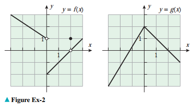

Лимеси - пресметка
`lim_(x->a)k=k,` `lim_(x->a^+)x=a,` `lim_(x->o^-)1/x=-oo,` `lim_(x->o^+)1/x=+oo,`
Вежба 1. Нека е дадено:
Според Теоремата 2,
`■`
Според Теоремата 2,
`■`
Според Теоремата 2,
`■`
Според Теоремата 2,
`■`
Според Теоремата 2,
`■`
`lim_(x -> a) f(x) = 2; lim_(x -> a) g(x) = -4; lim_(x -> a) h(x) = 0`
да се најде
лимесот
a. `lim_(x -> a) [f(x) + 2g(x)]`
Решение
`lim_(x -> a) [f(x) + 2g(x)] = lim_(x -> a) f(x) + 2lim_(x -> a) g(x) = 2 +
2*(-4) = -6`
Решение
`lim_(x -> a) [h(x) - 3g(x) +1] = lim_(x -> a) h(x) - 3lim_(x -> a) g(x) + 1 = 0
- 3*(-4) + 1 = 13`
Решение
`lim_(x -> a) [f(x) * g(x)] = lim_(x -> a) f(x) * lim_(x -> a) g(x) = 2 * (-4) =
-8`
Решение
`lim_(x -> a) root(3) [6 + f(x)]`
`= root(3) (lim_(x->a)(6+f(x)))`
`= root(3) 8 = 2`
Решение
`lim_(x -> a) 2/g(x) = (lim_(x->2) 2)/( lim_(x->2) g(x)) = 2/(-4)= -1/2`
Вежба 2. Со помош на графикот за `f` и `g` најди го лимесот. Ако не постои
објасни зошто.
Функцијата `f(x)` нема лимес `lim_(x->2) f(x)`
`■`
Функцијата `f(x)` нема лимес `lim_(x->0) f(x)`
`■`
`lim_(x -> 0^+) [f(x) + g(x)] = -2 + 2 = 0`
`■`
`lim_(x -> 0^-) [f(x) + g(x)] = 1 + 2 = 3`
`■`

a.`lim_(x -> 2) [f(x) + g(x)]`
Решение
Решение
Решение
Решение
Лимес од полиноми и рационални функции кога `x-> a`
Лимес од рационални функции кога `x-> a`
Лимес од полином `p(x)` и рационална функција е еднаков на вредноста на полиномот или рационалната функција за ведноста кон која клони променливата `x`. Пресметката на лимес на полином ја сведуваме на пресметка на полиномот или рационалната функција за дадената вредност на `x`.
Вежба 3.`lim_(x -> 2) x(x-1)(x+1)`
Според Теоремата 2,
`■`
Решение
`lim_(x -> 2) x(x-1)(x+1) = lim_(x->2) 2 * lim_(x->2) (2 - 1) * lim_(x->2) (2+1)
= 2*1*3 = 6`
Вежба 4.`lim_(x -> 3) x^3 - 3x^2 + 9x`
Според Теоремата 2,
`■`
Решение
`lim_(x -> 3) x^3 - 3x^2 + 9x = = lim_(x-> 3) x^3 - 3lim_(x->3) x^2 +9lim_(x->3)
x`
`=27 -27 + 27 = 27`
Вежба 5.`lim_(x -> 3) (x^2 - 2x)/(x + 1)`
`lim_(x -> 3) (x^2 - 2x)/(x + 1) = (lim_(x->3) (x^2-2x)) / (lim_(x->3) (x+1)) =
(3^2 -2*3)/(3+1) = 3/4`
`■`
Решение
Вежба 6.`lim_(x -> 2^+) sqrt(2 - x)`
Кога `x` клони кон `2` од десно изразот `2-x е негативен и не е во доменот на
функцијата, па лимесот не постои.
Решение
Неопределена вредност `k/0`
За рационални функции каде лимесот на именителот е нула не може да се одреди лимесот. Постојат два случаи кои треба да се разгледаат, случајот каде лимесот на именителот е нула и случајот каде лимесот и на именителот и на броителот е нула. Во случајот кога лимесот на именителот е нула но на броителот не е нула, може да се докаже дека лимес не постои и дека ја имаме една од следите ситуации:
- Лимесот може да биде `-oo` од една страна и `+oo` од друга страна.
- Лимесот може да биде `+oo`.
- Лимесот може да биде `-oo`.
Вежба 1.`lim_(x -> 1^+) 3/ (x -1)`
Со дирекна замена го добиваме неопределениот облик `k/0`. Кога `x` клони кон
`1` од десно, изразот `(x – 1)` е со позитивен предзнак [пр.
1.000001 - 1 > 0], така да
`lim_(x -> 1^+) 3/ (x -1)`
Лимесот е позитивна бескрајност бидејки количникот на `3` со многу мала
позитивна
вредност блиска до `0` дава голем позитивен број.
`■`
Решение
`= +oo`
Вежба 2a.`lim_(x -> 3^+) x/(x - 3)`
Со замена на вредноста за `x` се добива неопределениот облик `k/0`. За да го
одредиме предзнакот земамае број малку поголем од `3`. Сега предзнакот во
именителот е `+`, лимесот е :
`lim_(x -> 3^+) x/(x - 3) = + oo`
`■`
Решение
Вежба 2b.`lim_(x -> 3^-) x/(x - 3)`
Со замена на вредноста за `x` се добива неопределениот облик `k/0`. За да го
одредиме предзнакот земамае број малку помал од `3`. Сега предзнакот во
именителот е `-`, лимесот е :
`lim_(x -> 3^-) x/(x - 3) = - oo`
`■`
Решение
Вежба 2c.`lim_(x -> 3) x/(x - 3)`
Со замена на вредноста за `x` се добива неопределениот облик `k/0`. Лимес не
постои.
`■`
Решение
Вежба 3.`lim_(x -> (pi/2)^+) tanx`
Прво вршиме упростување:
`lim_(x -> (pi/2)^+) sinx/cosx`
Со дирекна замена го добиваме неопределениот облик `1/0`. Кога `x` клони кон
`pi/2` од десно, `sinx` клони кон `+1`, а `cos(x)` клони кон `-0`, така да
`lim_(x -> (pi/2)^+) sinx/cosx`
`■`
Решение
`= -oo`
Вежба 4.`lim_(x -> (pi)^-) x^2/sinx`
Со дирекна замена го добиваме неопределениот облик `pi/0`. Кога `x` клони
кон
`pi` од лево, `x` клони кон `pi`, а `sin(x)` клони кон `+0`, така да
`lim_(x -> (pi)^+) x^2/sinx`
`■`
Решение
`= +oo`
Вежба 5.`lim_(x -> 5^-) (x + 3)/(x - 5)`
Со дирекна замена го добиваме неопределениот облик `8/0`. Кога `x` клони кон
`5` од лево, `x - 5` клони кон `-0`, а `x + 3` клони кон `8`, така да
`lim_(x -> 5^-) x^2/sinx`
`■`
Решение
`= -oo`
Вежба 6.`lim_(x -> 0^-) (1 - x)/(e^x - 1)`
Со дирекна замена го добиваме неопределениот облик `1/0`. Кога `x` клони кон
`0` од лево, `e^x - 1` клони кон `-0`, така да
`lim_(x -> 0^-) (1 - x)/(e^x - 1)`
`■`
Решение
`= -oo`
Вежба 7.`lim_(x -> 0^-) cotx`
Прво ќе извршиме презапишување на изразот.
`lim_(x -> 0^-) cotx`
Со дирекна замена го добиваме неопределениот облик `1/0`. Кога `x` клони кон
`0` од лево, `cosx` клони кон `+1`, а `sinx` клони кон `-0`, така да
`lim_(x -> 0^-) cotx`
`■`
Решение
`lim_(x -> 0^-) cosx/sinx`
`= -oo`
Вежба 8.`lim_(x -> (1/2)0^+) (x^2 +1)/(xcos(pix))`
Прво ќе извршиме презапишување на изразот.
`lim_(x -> 0^-) cotx`
Со дирекна замена го добиваме неопределениот облик `1/0`. Кога `x` клони кон
`1/2` од десно, `cos(pix) -> cos(pi/2) ->` клони кон `-0`,така да
`lim_(x -> (1/2)0^+) (x^2 +1)/(xcos(pix))`
`■`
Решение
`lim_(x -> 0^-) cosx/sinx`
`= -oo`
Вежба 9.`lim_(x -> 5) sinx/(5 - x)^4`
Бидејки `pi < 5 < 2pi`, следи дека `sin(5) < 0`. Кога `x` се стреми кон `5`
изразот `(5 - x)^4` се стреми кон `+0`, па од тука:
`lim_(x -> 5) sinx/(5 - x)^4`
`■`
Решение
`= -oo`
Вежба 10.`lim_(x -> 0) (x + 5)/(x^4(x - 6))`
Саше да објасни зошто
`lim_(x -> 0) (x + 5)/(x^4(x - 6))`
`■`
Решение
`= -oo`
Вежба 11.`lim_(x -> 1) (3x)/(e^x - e)`
Саше да објасни зошто
`lim_(x -> 1) (3x)/(e^x - e)`
`■`
Решение
`=` лимесот не постои
Вежба 12.`lim_(x -> e^-) x^3/(lnx -1)`
Саше да објасни зошто
`lim_(x -> e^-) x^3/(lnx -1)`
`■`
Решение
`= -oo`
Решение
Со дирекна замена се добива неопределен облик `+oo - +oo`
Прво се бара заеднички именител и се упростува изразот.
`= lim_(x -> 0) (1/x - 1/(x(x + 1)))`
`= lim_(x -> 0) ((1(x + 1))/(x(x + 1)) + 1/(x(x + 1)))`
`= lim_(x -> 0) x/(x(x + 1))`
`= lim_(x -> 0) 1/(x + 1)`
`= lim_(x -> 0) 1/(0 + 1)`
`= 1`
`■`
Неопределена вредност `0/0`
Со замена се добива неопределениот облик `0/0`, што значи дека броителот и именителот имаат заеднички множител `x – a`. Од овде следи дека може да се поделат со `x – a`. Во овој случај, прво се крати заедничкиот множител `x – a`, а потоа се бара лимесот на добиената поедноставна функција.
Вежба 1.`lim_(x -> 1^+) (x^4 - 1)/(x - 1)`
`= lim_(x -> 1^+) ((x-1)(x+1)(x^2+1))/(x - 1)`
`■`
Решение
`= lim_(x -> 1^+) (x^3 +x^2+x+1)`
`= 1^3+1^2+1+1=4`
Вежба 2.`lim_(x -> -2) (x^3 +8)/(x + 2)`
Кај броителот применуваме разложување со примена на формулите за скратено
множење `(x^3+-y^3)=(x+y)(x^2 +-
xy + y^2)`
`■`
Решение
`= lim_(x -> -2) ((x +2)(x^2 + 2x + 4))/(x + 2)`
` = lim_(x -> -2) (x^2 + 2x + 4)=4`
Вежба 3.`lim_(x -> -5) (x^2 + 5x)/(x^2 - 25)`
`= lim_(x -> -5) (x(x + 5))/((x - 5)(x +5))`
`■`
Решение
`= lim_(x -> -5) x/(x - 5)`
`= 1/2
Вежба 4.`lim_(x -> -1) (x^2 + 6x + 5)/(x^2 -3x - 4)`
Потребно е разложување на квадратен трином на линеарни множители `ax^2 + bx + c
= a(x-x_1)(x-x_2)`
`■`
Решение
`= lim_(x -> -1) (1(x+1)(x+5))/(1(x-4)(x+1))`
`= lim_(x -> -1) (x+5)/(x-4)`
`=-4/5`
Вежба 5.`lim_(x -> 2) (x^2 -4x + 4)/(x^2 + x - 6)`
Потребно е разложување на квадратен трином на линеарни множители `ax^2 + bx + c
= a(x-x_1)(x-x_2)`
`■`
Решение
`= lim_(x -> 2) (1(x-2)(x-2))/(1(x-2)(x+3))`
`= lim_(x -> 2) (x-2)/(x+4)`
`= 0/6 = 0`
Вежба 6.`lim_(x -> -1) (2x^2 +x - 1)/(x + 1)`
Потребно е разложување на квадратен трином на линеарни множители `ax^2 + bx +
c`
`■`
Решение
`2x^2 + x - 1 = (2x - x_1)(x - x_2)
= a(x-x_1)(x-x_2)`
`= lim_(x -> -1) (2(x-1/2)(x+1))/(x + 1)`
`= lim_(x -> -1) 2(x - 1/2)`
`= -3`
Вежба 7.`lim_(x -> 1) (3x^2 - x - 2)/(2x^2 + x -3)`
Саше да ја реши
`■`
Решение
Вежба 8.`lim_(x -> 2) (x^3 + 3x^2 - 12x + 4)/(x^3 - 4x)`
Потребно е разложување со примена на формулите за скратено множење
`(x^3+-y^3)=(x+y)(x^2 +- xy + y^2)`
`■`
Решение
`= lim_(x -> 2) (x^3 + 3x^2 - 12x + 4)/(x(x^2 - 2^2)`
`= lim_(x -> -1) 2(x - 1/2)`
`= -3
Вежба 9.`lim_(x -> 5) (x^2 - 25)/ (3x^2 - 16x + 5)`
`lim_(x -> 5) ((x - 5)(x + 5))/ (3(x - x_1)(x - x_2))`
`■`
Решение
`lim_(x -> 5) ((x - 5)(x + 5))/ (3(x - 5)(x + 1/3))`
`lim_(x -> 5) (x + 5)/ (3x - 1)`
`= lim_(x -> 5) 10/14`
`= 2/7`
Вежба 10.`lim_(x -> 4) (4 - x)/(2 - sqrt(x))`
`= lim_(x -> 4) ((2 - sqrt(x))(2 + sqrt(x)))/(2 - sqrt(x))`
`■`
Решение
`= lim_(x -> 4) 2 + sqrt(x)`
`= 4
Вежба 11.`lim_(x -> 0) (sqrt(4 + x) - 2)/ x`
Прво се бара заеднички именител и се упростува изразот.
`■`
Решение
`= lim_(x -> 0) ((sqrt(4 + x) - 2)(sqrt(4 + x) + 2))/(x (sqrt(4 + x) + 2))`
`= lim_(x -> 0) (4 + x - 4)/(x (sqrt(4 + x) + 2))`
`= lim_(x -> 0) x/(x (sqrt(4 + x) + 2))`
`= lim_(x -> 0) 1/(sqrt(4 + x) + 2)`
`= lim_(x -> 0) 1/(2 + 2)`
`= 1/4`
Вежба 12.`lim_(x -> (4/3)) (3x^2 - 4x)/ abs(3x - 4)`
Дирекната замена дава неопределен облик `0/0`.
Треба да се одреди левиот и десниот лимес за да се одреди дали лимесите се
еднакви.
За да го најдеме левиот лимес, ќе ја разгледаме вредноста која е маклу помала од
`4/3` и ќе ја вметнемево лимесот. За да се упрости апосутната вредност во
именителот, ознаките за апсолутна вредност `|` се заменуваат со мали загради `(`
и
се додава негативен знак, бидејки замената со вредност помала од `4/3`
ќе го
направи бројот во заградата негативен а додадениот негативен знак ќе ја
направи
вредноста повторно позитивна.
`lim_(x -> (4/3)^-) (3x^2 - 4x)/ -(3x - 4)`
Десниот лимес гоодредуваме слично. Сега знакот за аполутна вредност едноставно
го
заменуваме со мали загради, негативниот знак не е потребен бидејнки вредноста во
заградите е позитивна кога `x` го менуваме со вредност малку поголема од
`4/3`
`lim_(x -> (4/3)^-) (3x^2 - 4x)/ (3x - 4)`
Бидејки левиот и десниот лимес не се еднакви, лимесот не постои.
`■`
Решение
`lim_(x -> (4/3)^-) (x(3x - 4))/ -(3x - 4)`
`lim_(x -> (4/3)^-) -x`
`= -4/3`
`lim_(x -> (4/3)^-) (x(3x - 4))/ (3x - 4)`
`lim_(x -> (4/3)^-) x`
`= 4/3`
Вежба 13.`lim_(x -> 0^+) (2/x^2 + 2/abs(x))`
Дирекната замена дава неопределен облик `0/0`.
Бидејки кон `0` се стремиме од десно, `x > 0` така да `x = x`. Од тука
лимесот е:
`lim_(x -> 0^+) (2/x^2 + 2/x)`
`■`
Решение
`lim_(x -> 0^+) ((2x + 2)/x^2)
`= +oo`
Вежба 14.`lim_(x ->3) (sqrt(x+3) - sqrt(2x))/(x^2 - 3x)`
Дирекната замена дава неопределен облик `0/0`.
Отпочнуваме со множење на броителот и именителот со заеднички множител:
`lim_(x ->3) ((sqrt(x+3) - sqrt(2x))(sqrt(x+3) + sqrt(2x)))/((x^2 -
3x)(sqrt(x+3) + sqrt(2x)))`
`■`
Решение
`lim_(x ->3) (x + 3 - 2x )/(x(x - 3)(sqrt(x+3) + sqrt(2x)))`
`lim_(x ->3) -(x - 3)/(x(x - 3)(sqrt(x+3) + sqrt(2x)))`
`lim_(x ->3) -1/(x(sqrt(x+3) + sqrt(2x)))`
`lim_(x ->3) -1/(3(sqrt(6) + sqrt(6)))`
`= -1/(6sqrt(6))`
Решение
Дирекната замена дава неопределен облик `0/0`.
Бидејки кон `4` се стремиме од десно изразот во именоителот е`abs(x-4) = (x-4)`.Т
`lim_(x -> 4^+) (x - 4)/(x - 4)`
`lim_(x -> 4^+) 1`
`= 1`
Решение
Дирекната замена дава неопределен облик `0/0`.
Бидејки кон `5` се стремиме од лево изразот во именоителот е`abs(x-5) = -(x-5)`.Т
`lim_(x -> 5^-) (x - 5)/-(x - 5)`
`lim_(x -> 5^-) -1`
`= 1`
Решение
Дирекната замена дава неопределен облик `0/0`.
Кога кон `3` се стремиме од десно изразот `abs(3 - x)` станува `-(3 - x), и со упростување на именителот добиваме:
`= lim_(x -> 3^+) -(3 - x)/ ((x - 3)(x + 1))`
`= lim_(x -> 3^+) (x - 3)/ ((x - 3)(x + 1))`
`= lim_(x -> 3^+) 1/ (x + 1)`
`= lim_(x -> 3^+) 1/ (3 + 1)`
`= 1/4`
`■`
-->Решение
Дирекната замена дава неопределен облик `1/0`.
Ако кон `2`се стремиме од десно, изразот во именителот е `-(2 - x)`. Сега со замена добиваме:
`lim_(x -> (4/3)^-) (3x^2 - 4x)/ -(3x - 4)`
`lim_(x -> (4/3)^-) (x(3x - 4))/ -(3x - 4)`
`lim_(x -> (4/3)^-) -x`
`= -4/3`
Десниот лимес гоодредуваме слично. Сега знакот за аполутна вредност едноставно го заменуваме со мали загради, негативниот знак не е потребен бидејнки вредноста во заградите е позитивна кога `x` го менуваме со вредност малку поголема од `4/3`
`lim_(x -> (4/3)^-) (3x^2 - 4x)/ (3x - 4)`
`lim_(x -> (4/3)^-) (x(3x - 4))/ (3x - 4)`
`lim_(x -> (4/3)^-) x`
`= 4/3`
Бидејки левиот и десниот лимес не се еднакви, лимесот не постои.
`■`
-->
Вежба 20.`lim_(x ->0) (1/(xsqrt(1+x)) - 1/x)`
Саќе да реши ..Дирекната замена дава ..
Треба да се знае дека:
`lim_(x -> 0)sinx/x = 1` и `lim_(x->0) (cosx -1)/x = 0`
За да го искористиме обликот `sinx/x` треба изразот да го презапишеме како:
`lim_(x -> 0) (5sin(5x))/ (5x)`
сега:
`lim_(x -> 0) (5sin(5x))/ (5x)`
`■`
`lim_(x -> 0) (2cosx -2)/ sinx`
Со замена го добиваме неопределениот облик `0/(sqrt(2)/2-sqrt(2)/2) = 0/0`.
`lim_(x -> (pi/4)) (cos2x)/(sinx - cosx)`
Со замена се добива неопределениот облик `0/0`.
Треба да го презапишеме изразот за да можеме да го искористиме познатиот факт
дека `lim_(x->0) sinx/x = 1`
`lim_(x -> 0) (sin5x)/(sin9x)`
Со замена се добива неопределениот облик `0/0`.
Треба да го презапишеме изразот за да можеме да го искористиме познатиот факт
дека `lim_(x->0) sinx/x = 1`
`lim_(x -> 0) ((sin7x)/(cos7x))/(sin3x)`
Со замена се добива неопределениот облик `0/0`.
Треба да го презапишеме изразот за да можеме да го искористиме познатиот факт
дека `lim_(x->0) sinx/x = 1`
`lim_(x -> 0) (sin2x)/x *(sin2x)/x *(sin2x)/x`
Со замена се добива неопределениот облик `0/0`.
Треба да го презапишеме изразот за да можеме да го искористиме познатиот факт
дека `lim_(x->0) sinx/x = 1`
`lim_(x -> 0) (sinx)/(x + tanx)`Решение
Лимеси од тригонометриски функции
Решение
`= 5lim_(x -> 0) sin(5x)/ (5x)`
`= 5*1`
`= 5`
Решение
`= lim_(x -> 0) 2(cosx - 1)/ sinx`
`= lim_(x -> 0) 2((cosx - 1)/x)/(sinx/x)`
`= lim_(x -> 0) 2 * 0/1`
`= 0`
Решение
Треба да се знае декa `cos2x = cos^2x - sin^2x`
`= lim_(x -> (pi/4)) (cos^2x - sin^2x)/(sinx - cosx)`
`= lim_(x -> (pi/4)) ((cosx - sinx)(cosx + sinx))/(sinx - cosx)`
`= lim_(x -> (pi/4)) ((-1)(sinx - cosx)(cosx + sinx))/(sinx - cosx)`
`= lim_(x -> (pi/4)) -(cosx + sinx)`
`= lim_(x -> (pi/4)) -(cos(pi/4) + sin (pi/4))`
`= lim_(x -> (pi/4)) -(sqrt(2)/2 + sqrt(2)/2)`
`= -sqrt(2)`
Решение
`= lim_(x -> 0) ((sin5x)/x)/((sin9x)/x)`
`= lim_(x -> 0) ((sin5x)/x * x/(sin9x))`
`= lim_(x -> 0) ((5sin5x)/(5x) * (9x)/(9sin9x))`
`= lim_(x -> 0) ((5sin5x)/(5x) * (9x)/(9sin9x))`
`= 5/9`
Решение
`= lim_(x -> 0) (sin7x)/(cos7x) * 1/(sin3x)`
`= lim_(x -> 0) (sin7x)/1 * 1/(cos7x) * 1/(sin3x)`
`= lim_(x -> 0) ((7xsin7x)/(7x) * 1/(cos7x) * (3x)/(3xsin3x))`
`= lim_(x -> 0) (7x * 1 * 1/(3x))`
`= lim_(x -> 0) 7/3`
`= 7/3`
Решение
`lim_(x -> 0) 8*((sin2x)/(2x) *(sin2x)/(2x) *(sin2x)/(2x))`
`= lim_(x -> 0) 8`
`= 8`
Решение
`lim_(x -> 0) ((sinx)/x)/((x + (sinx/cosx))/x)`
`lim_(x -> 0) ((sinx)/x)/((1 + (sinx/x)*1/cosx))`
`lim_(x -> 0) 1/(1 + 1 * 1)`
`= 1/2`